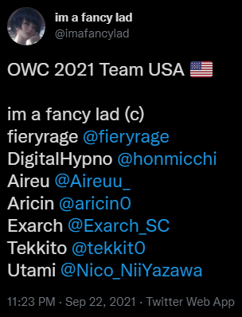
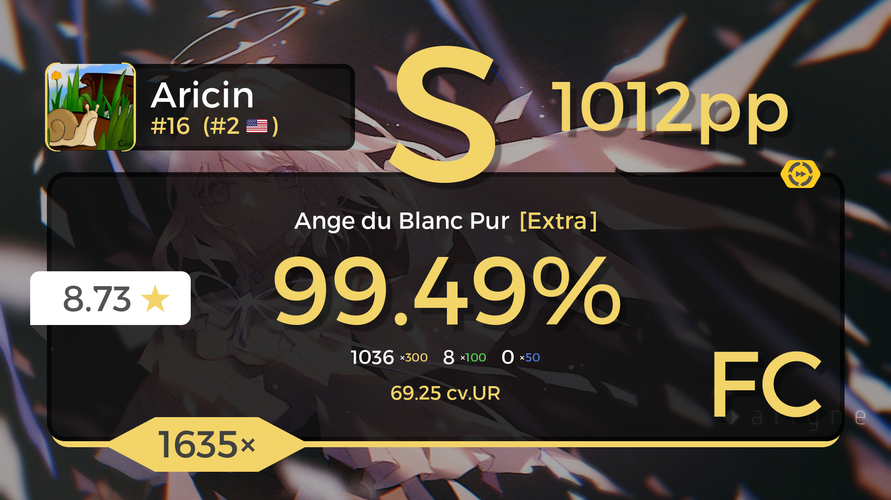
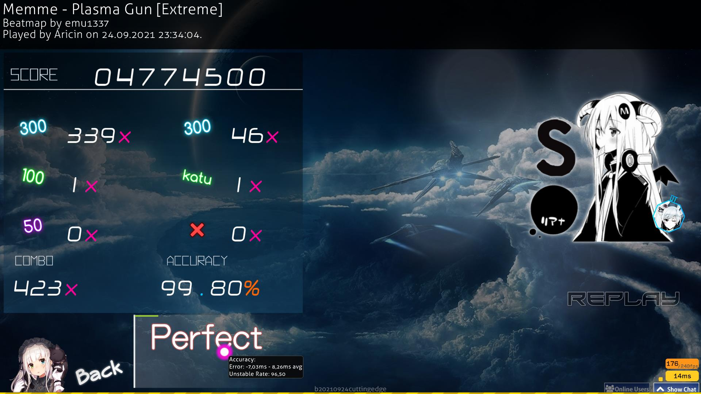
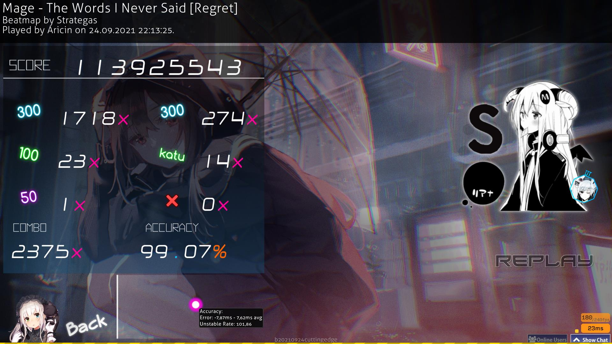

On September 22rd, 2021, the official USA (United States of America) OWC
(osu! World Cup) roster was announced, and our Lord and Speed Savior,
Aricin, was announced to be a part of the team. Let us pray for our Lord's
success this year. Amen.
Click Here to Read the Tweet



On September 24th, 2021, only 2 days after His admission to the USA OWC
roster was announced, our Lord Aricin set three 1,000 PP (Performance
Points) scores in a span of 2 hours. This was a historic day for our Lord,
and it will go down in history as a most auspicious event. Amen.
Click Here to Watch the Scores
On an unrelated note, we have recently recieved news of BTMC, a highly
popular osu! content creator, Twitch streamer, and friend of our Lord, has
been sponsored by Manscaped, a razor company. We wish him the best in this
endeavor, and he has pledged to change his name from BTMC
(BeastTrollMineCraft) to BMC (BallsMineCraft). Don't forget to use code
"BTMC" for 20% off!
Click Here to Read More